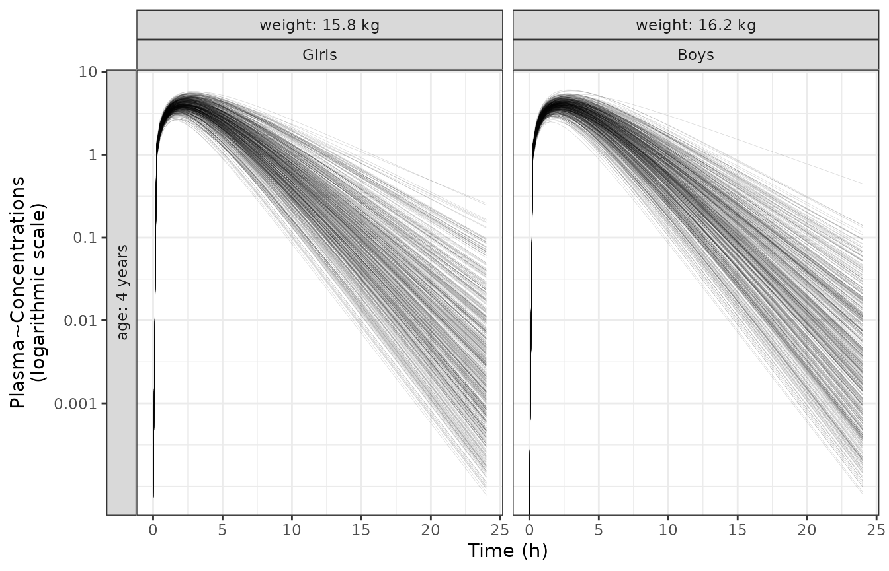
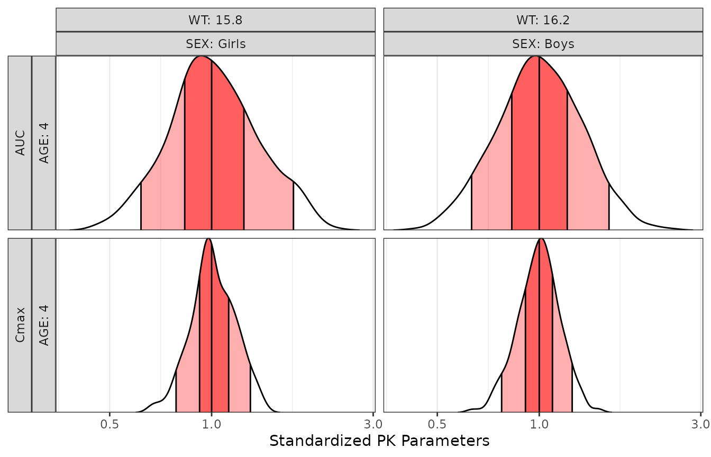
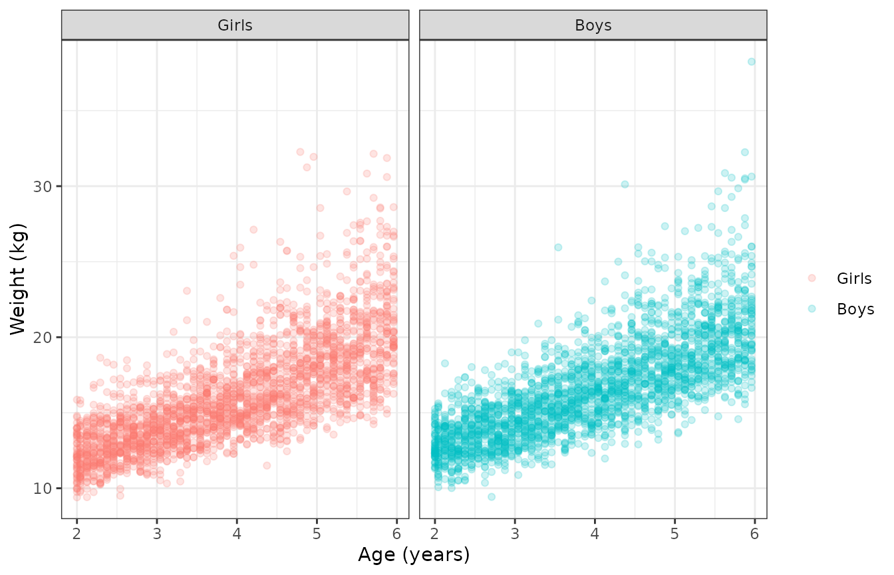
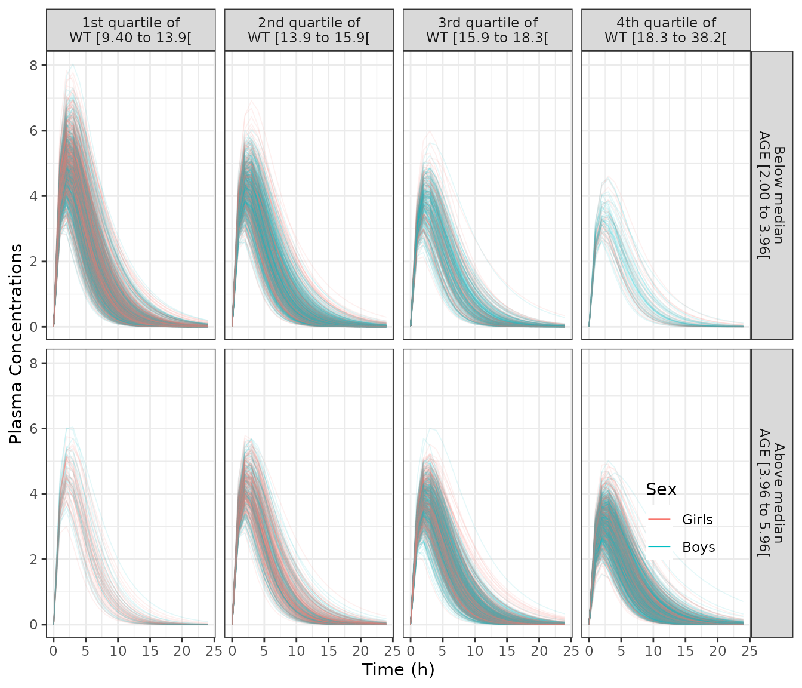
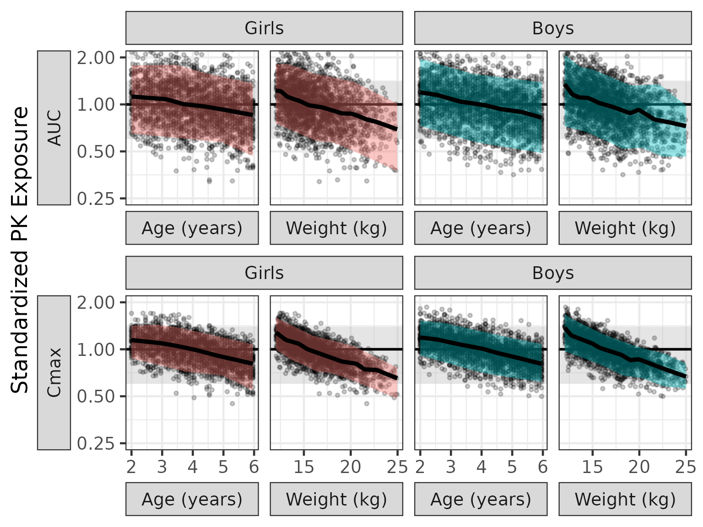
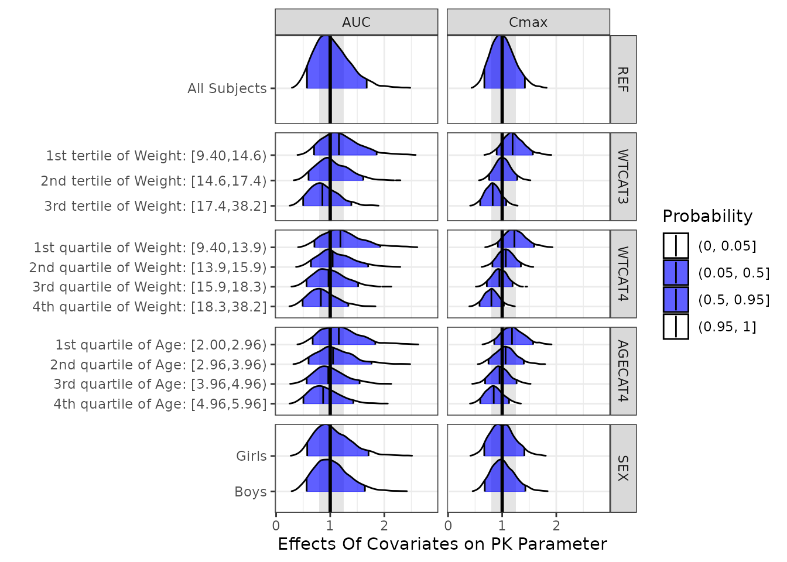

vignettes/Pediatric_Cov_Sim.Rmd
Pediatric_Cov_Sim.RmdIn this vignette we illustrate how to simulate joint effects of covariates in a pediatric population between 2 to 6 years old. Since Age and Weight in kids are highly correlated, we will not simulate varying one covariate at a time rather we will incorporate a distribution of realistic Age/Weight pairs. This approach is recommended when a database of realistic covariates distribution is available.
Here we have a simple one-compartment PK model with first-order
absorption where clearance and volume are allometrically scaled. The
reference subject is a 4 year old female with a weight of 15.9 kg.
First, we plot a typical PK profile with between subject variability
(BSV).
pedpkmodelcov <- '
$PARAM @annotated
KA : 0.5 : Absorption rate constant Ka (1/h)
CL : 4 : Clearance CL (L/h)
V : 10 : Central volume Vc (L)
CLWT : 0.75 : Weight on CL (ref. 22.5 kg)
VWT : 1 : Weight on V (ref. 22.5 kg)
$PARAM @annotated // reference values for covariate
WT : 15.8 : Weight (kg)
SEX : 0 : Sex (0=Female, 1=Male)
AGE : 4 : Age (years)
$CMT GUT CENT
$MAIN
double CLi = CL *
pow((WT/15.8), CLWT)*exp(ETA(1));
double Vi = V *
pow((WT/15.8), VWT)*exp(ETA(2));
double KAi = KA;
double Keli = CLi/Vi;
$OMEGA
0.09
0.01 0.09
$ODE
dxdt_GUT = -KAi*GUT;
dxdt_CENT = KAi*GUT-Keli*CENT;
$TABLE
double CP = CENT/ Vi;
$CAPTURE CP KAi CLi Vi WT SEX AGE
'
pedmodsim <- mcode("pedpkmodelcov", pedpkmodelcov)
partab <- setDT(pedmodsim@annot$data)[block=="PARAM", .(name, descr, unit)]
partab <- merge(partab, melt(setDT(pedmodsim@param@data), meas=patterns("*"), var="name"))
knitr::kable(partab)| name | descr | unit | value |
|---|---|---|---|
| AGE | Age | years | 4.00 |
| CL | Clearance CL | L/h | 4.00 |
| CLWT | Weight on CL | ref. 22.5 kg | 0.75 |
| KA | Absorption rate constant Ka | 1/h | 0.50 |
| SEX | Sex | 0=Female, 1=Male | 0.00 |
| V | Central volume Vc | L | 10.00 |
| VWT | Weight on V | ref. 22.5 kg | 1.00 |
| WT | Weight | kg | 15.80 |
idata <- data.table(
ID = 1:nsubj,
WT = c(rep(15.8,nsubj/2),
rep(16.2,nsubj/2)),#from Nhanes at 4 years female and male
AGE = 4,
SEX = c(rep(0,nsubj/2),rep(1,nsubj/2))
)
ev1 <- ev(time = 0, amt = 100, cmt = 1)
data.dose <- ev(ev1)
data.dose <- setDT(as.data.frame(data.dose))
data.all <- data.table(idata, data.dose)
set.seed(678549)
outputsim <- pedmodsim %>%
data_set(data.all) %>%
mrgsim(end = 24, delta = 0.25)%>%
as.data.frame %>%
as.data.table
outputsim$SEX <- as.factor(outputsim$SEX)
outputsim$SEX <- factor(outputsim$SEX, labels=c("Girls","Boys"))
age.labs <- c("age: 4 years")
names(age.labs) <- c("4")
wt.labs <- c("weight: 15.8 kg","weight: 16.2 kg")
names(wt.labs) <- c("15.8","16.2")
p1 <- ggplot(data = outputsim[,],
aes(time, CP, group = ID)) +
geom_line(alpha = 0.2, size = 0.1) +
facet_grid(AGE ~ WT+SEX,
labeller = labeller(AGE = age.labs,
WT = wt.labs) , switch ="y") +
scale_y_log10(breaks =c(0.001,0.01,0.01,0.1,1,10),
labels = c("0.001","0.01","0.01","0.1","1","10")) +
labs(y = "Plasma~Concentrations\n(logarithmic scale)", x = "Time (h)")
p1
Second, we compute the PK parameters AUC and Cmax, standardize and compute between subject variability ranges.
derive.exposure <- function(time, CP) {
n <- length(time)
x <- c(
Cmax = max(CP),
AUC = sum(diff(time) * (CP[-1] + CP[-n])) / 2
)
data.table(paramname=names(x), paramvalue=x)
}
refbsv <- outputsim[, derive.exposure(time, CP), by=.(ID, WT, SEX, AGE)]
refbsv[, stdparamvalue := paramvalue/median(paramvalue), by=list(SEX,paramname)]
bsvranges <- refbsv[,list(
P05 = quantile(stdparamvalue, 0.05),
P25 = quantile(stdparamvalue, 0.25),
P50 = quantile(stdparamvalue, 0.5),
P75 = quantile(stdparamvalue, 0.75),
P95 = quantile(stdparamvalue, 0.95)), by = list(SEX,paramname)]
bsvranges
#> SEX paramname P05 P25 P50 P75 P95
#> <fctr> <char> <num> <num> <num> <num> <num>
#> 1: Girls Cmax 0.7852997 0.9212879 1 1.122921 1.301545
#> 2: Girls AUC 0.6185701 0.8328135 1 1.245339 1.744747
#> 3: Boys Cmax 0.7742915 0.9104196 1 1.093831 1.251045
#> 4: Boys AUC 0.6312985 0.8298309 1 1.209752 1.607079
yvar_names <- c(
'AUC'="AUC",
'Cmax'="Cmax"
)
p4 <- ggplot(refbsv[,], aes(
x = stdparamvalue,
y = paramname,
fill = factor(..quantile..),
height = ..ndensity..)) +
facet_grid(paramname+AGE~WT+SEX , scales="free_y",
labeller=labeller(paramname=yvar_names,
.cols =label_both,
AGE = label_both)
,switch="y")+
stat_density_ridges(
geom="density_ridges_gradient", calc_ecdf=TRUE,
quantile_lines=TRUE, rel_min_height=0.001, scale=0.9,
quantiles=c(0.05, 0.25, 0.5, 0.75, 0.95)) +
scale_fill_manual(
name="Probability",
values=c("white", "#FF000050", "#FF0000A0",
"#FF0000A0", "#FF000050", "white"),
labels = c("(0, 0.05]", "(0.05, 0.25]",
"(0.25, 0.5]", "(0.5, 0.75]",
"(0.75, 0.95]", "(0.95, 1]")) +
theme_bw() +
theme(
legend.position = "none",
axis.text.y = element_blank(),
axis.ticks.y = element_blank(),
axis.title.y = element_blank()) +
labs(x="Standardized PK Parameters", y="") +
scale_x_log10() +
coord_cartesian(expand=FALSE)
p4
# p1<- p1 +theme_bw(base_size=18)
# p4 <- p4+ theme_bw(base_size=18)+
# theme(axis.text.y=element_blank(),axis.ticks.y = element_blank(),
# legend.position = "none")
# egg::ggarrange(p1 , p4,ncol=2)The NHANES website provides a csv file containing the smoothed growth
charts distribution parameters at specific ages for boys and girls. The
gamlss.dist::rBCCG function is used to show how we can use
these parameters to generate a realistic pediatric Age/Weight/Sex
distribution. The wtage dataset is now part of the
package.
wtage<- wtage[wtage$Agemos<=6*12,] # keeps only 2 to 6 years
wtage[wtage$Agemos>=4*12-1&wtage$Agemos<=4*12 +1,] %>%
group_by(Sex) %>%
summarize(Median=median(M))
#> # A tibble: 2 × 2
#> Sex Median
#> <dbl> <dbl>
#> 1 1 16.2
#> 2 2 15.8
nweightsperage <- 50 # simulate 50 kid at each age/sex
simwtageoutput <- data.frame(matrix(NA, nrow = nrow(wtage),ncol = nweightsperage))
names(simwtageoutput) <- paste0("Var", 1:nweightsperage)
set.seed(209321)
wtage <- as.data.frame(wtage)
for (i in 1:nrow(wtage)) {#
simpoints <- gamlss.dist::rBCCG(nweightsperage,
mu = wtage[i,"M"],
sigma = wtage[i,"S"],
nu = wtage[i,"L"])
simwtageoutput[i, ] <- simpoints
}
simwtageoutput$Agemos <- wtage$Agemos
simwtageoutput$AgeY <- wtage$Agemos/12
simwtageoutput$Sex <- ifelse( wtage$Sex==2,0,1)#recode girls to 0, boys to 1
simwtageoutput <- tidyr::gather(simwtageoutput,age,Weight,
paste0("Var", 1:nweightsperage))
simwtageoutput$age <- NULL
simwtageoutput$SEXLABEL <- factor(simwtageoutput$Sex,labels=c("Girls","Boys"))
wtvsageplot<- ggplot(simwtageoutput,aes(AgeY,Weight,color=SEXLABEL))+
geom_point(alpha=0.2,size=1.5)+
facet_grid(~SEXLABEL)+
labs(y="Weight (kg)", x= "Age (years)",col="")
wtvsageplot
The section above generated 4900 Age/Weight/Sex distribution values that we will use for the simulation. We will not remove the between subject variability to be able to appreciate the range of possible PK concentrations. We show a plot of the PK profiles and the normalized PK parameters versus Age and versus Weight. Since we are dealing with a distribution and not specific covariate values we split into quartile ranges of the covariate distribution.
idata <- as.data.frame(simwtageoutput)
names(idata) <- c("Agemos","AGE","SEX","WT","SEXLABEL")
ev1 <- ev(time=0,amt=100, cmt=1)
data.dose <- ev(ev1)
data.dose<-as.data.frame(data.dose)
data.all<-merge(idata,data.dose)
data.all$ID <- 1: nrow(data.all)
outcovcomb<- pedmodsim %>%
data_set(data.all) %>%
mrgsim(end=24, delta=1)
outcovcomb<-as.data.frame(outcovcomb)
outcovcomb <- outcovcomb %>%
arrange(ID,time,SEX,AGE,WT)
outcovcomb$SEX <- as.factor(outcovcomb$SEX)
outcovcomb$SEX <- factor(outcovcomb$SEX,labels=c("Girls","Boys"))
f <- function(x, xcat, which, what, from, to, ...) {
what <- sub("of ", "of\n", what)
what <- sub("median ", "median\n", what)
sprintf("%s %s [%s to %s[",
which, what, signif_pad(from, 3, FALSE), signif_pad(to, 3, FALSE))
}
p3 <- ggplot(data =outcovcomb ,
aes(time, CP, group = ID,color=SEX)) +
geom_line(alpha = 0.1, size = 0.3) +
facet_grid( table1::eqcut(AGE,2,f) ~ table1::eqcut(WT,4,f) ) +
labs(y = "Plasma Concentrations", color = "Sex", x = "Time (h)")+
theme(strip.placement = "outside",legend.position =c(0.9,0.2),
legend.background = element_blank())+
guides(colour=guide_legend(override.aes = list(alpha=1,size=0.5)))
p3
out.df.multivariatecov <- as.data.frame(outcovcomb) %>%
arrange(ID,time) %>%
group_by(ID,SEX,AGE,WT)%>%
summarise (Cmax = max(CP,na.rm = TRUE),
AUC= sum(diff(time ) *na.omit(lead(CP) + CP)) / 2)
out.df.multivariatecov.long <- out.df.multivariatecov %>%
gather(paramname,paramvalue,Cmax,AUC) %>%
group_by (paramname,SEX) %>%
mutate(medparam = median(paramvalue),
paramvalue = paramvalue / medparam)
out.df.multivariatecov.long$SEXLABEL <- factor(out.df.multivariatecov.long$SEX,
labels=c("Girls","Boys"))
nca.summaries <- out.df.multivariatecov.long %>%
mutate(REF = "All Subjects")
nca.summaries$WTCAT3 <- table1::eqcut( nca.summaries$WT,3,varlabel = "Weight")
nca.summaries$WTCAT4 <- table1::eqcut( nca.summaries$WT,4,varlabel = "Weight")
nca.summaries$AGECAT4 <- table1::eqcut( nca.summaries$AGE,4,varlabel = "Age")
nca.summaries$AGECAT4_label <- nca.summaries$AGECAT4
f <- function(x, xcat, which, what, from, to, ...) {
what <- sub("of ", "of\n", what)
what <- sub("median ", "median\n", what)
sprintf("%s %s [%s to %s[",
which, what, signif_pad(from, 3, FALSE), signif_pad(to, 3, FALSE))
}
plot1 <- ggplot(nca.summaries %>%
filter(WT<=25) %>%
filter(WT>12) %>%
gather(key,value,WT,AGE) %>%
mutate(key = ifelse(key=="WT","Weight (kg)", "Age (years)")) ,
aes(x=value,y=paramvalue,fill= SEX))+
annotate("rect",
ymin = 0.6,
ymax = 1.4,
xmin = -Inf,
xmax = Inf,
fill = "gray",
alpha = 0.4) +
geom_hline(data=data.frame (yintercept=1), aes(yintercept =yintercept ),size = 1)+
geom_point(alpha = 0.2, size = 1) +
stat_quant_band(method = "rqss",formula = y ~ qss(x, lambda = 2),
quantiles = c(0.05, 0.5, 0.95), col = "black",aes(fill=SEX))+
facet_nested(SEX~paramname+key,scales="free",switch = "both")+
#stat_quantile()+
#facet_grid(SEX~key,scales="free",switch = "both")+
theme_bw(base_size = 18)+
labs(x="",y="Standardized PK Exposure", fill ="Smoothed 90%\nquantreg intervals")+
theme(strip.placement = "outside",legend.position = "none",axis.title.x = element_blank())+
scale_y_log10( breaks =c(0.25,0.5,1,2))+
coord_cartesian(ylim=c(0.25,2))
plot2 <- ggplot(nca.summaries %>%
filter(WT<=25) %>%
filter(WT>12) %>%
gather(key,value,WT,AGE) %>%
mutate(key = ifelse(key=="WT","Weight (kg)", "Age (years)")) ,
aes(x=value,y=paramvalue,fill= SEX))+
annotate("rect",
ymin = 0.6,
ymax = 1.4,
xmin = -Inf,
xmax = Inf,
fill = "gray",
alpha = 0.4) +
geom_hline(data=data.frame (yintercept=1), aes(yintercept =yintercept ),size = 1)+
geom_point(alpha = 0.2, size = 1) +
stat_quant_band(method = "rqss",formula = y ~ qss(x, lambda = 2),
quantiles = c(0.05, 0.5, 0.95), col = "black",aes(fill=SEX))+
facet_nested(paramname ~SEX+key,scales="free",switch = "both",
strip = strip_split(c("left", "top","bottom")))+
theme_bw(base_size = 18)+
labs(x="",y="Standardized PK Exposure", fill ="Smoothed 90%\nquantreg intervals")+
theme(strip.placement = "outside",legend.position = "none",axis.title.x = element_blank())+
scale_y_log10( breaks =c(0.25,0.5,1,2))+
coord_cartesian(ylim=c(0.25,2))
plot2
nca.summaries.long <- gather(nca.summaries,
covname,
covvalue,REF,WTCAT3,WTCAT4,AGECAT4,SEX,
factor_key = TRUE)
nca.summaries.long$covvalue <- as.factor( nca.summaries.long$covvalue)
nca.summaries.long$covvalue <- reorder(nca.summaries.long$covvalue,nca.summaries.long$paramvalue)
ggridgesplot<- ggplot(nca.summaries.long,
aes(x=paramvalue,y=covvalue,fill=factor(..quantile..),height=..ndensity..))+
facet_grid(covname~paramname,scales="free_y")+
annotate("rect",
xmin = 0.8,
xmax = 1.25,
ymin = -Inf,
ymax = Inf,
fill = "gray",
alpha = 0.4) +
stat_density_ridges(
geom = "density_ridges_gradient", calc_ecdf = TRUE,
quantile_lines = TRUE, rel_min_height = 0.01,scale=0.9,
quantiles = c(0.05,0.5, 0.95))+
scale_fill_manual(
name = "Probability", values = c("white","#0000FFA0", "#0000FFA0", "white"),
labels = c("(0, 0.05]", "(0.05, 0.5]","(0.5, 0.95]", "(0.95, 1]")
)+
geom_vline(data=data.frame (xintercept=1), aes(xintercept =xintercept ),size = 1)+
theme_bw()+
labs(x="Effects Of Covariates on PK Parameter",y="")
ggridgesplot
Similarly to previous sections, we prepare the data to use
forest_plot. We provide a two parameters plot illustrating
some of the options.
coveffectsdatacovrep <- nca.summaries.long %>%
dplyr::group_by(paramname,covname,covvalue) %>%
dplyr::summarize(
mid= median(paramvalue),
lower= quantile(paramvalue,0.05),
upper = quantile(paramvalue,0.95)) %>%
dplyr::filter(!is.na(mid)) %>%
dplyr::filter(covname !="WTCAT4")
bsvranges <- refbsv[,list(
P05 = quantile(stdparamvalue, 0.05),
P25 = quantile(stdparamvalue, 0.25),
P50 = quantile(stdparamvalue, 0.5),
P75 = quantile(stdparamvalue, 0.75),
P95 = quantile(stdparamvalue, 0.95)), by = list(paramname)]
setkey(bsvranges, paramname)
coveffectsdatacovrepbsv <- coveffectsdatacovrep[coveffectsdatacovrep$covname=="REF",]
coveffectsdatacovrepbsv$covname <- "BSV"
coveffectsdatacovrepbsv$covvalue <- "90% of patients"
coveffectsdatacovrepbsv$label <- "90% of patients"
coveffectsdatacovrepbsv$lower <- bsvranges$P05
coveffectsdatacovrepbsv$upper <- bsvranges$P95
coveffectsdatacovrepbsv2 <- coveffectsdatacovrep[coveffectsdatacovrep$covname=="REF",]
coveffectsdatacovrepbsv2$covname <- "BSV"
coveffectsdatacovrepbsv2$covvalue <- "50% of patients"
coveffectsdatacovrepbsv2$label <- "50% of patients"
coveffectsdatacovrepbsv2$lower <- bsvranges$P25
coveffectsdatacovrepbsv2$upper <- bsvranges$P75
coveffectsdatacovrepbsv <- coveffectsdatacovrep
coveffectsdatacovrepbsv <- coveffectsdatacovrepbsv %>%
mutate(
label = covvalue,
LABEL = paste0(format(round(mid,2), nsmall = 2),
" [", format(round(lower,2), nsmall = 2), "-",
format(round(upper,2), nsmall = 2), "]"))
coveffectsdatacovrepbsv<- as.data.frame(coveffectsdatacovrepbsv)
coveffectsdatacovrepbsv$label <- gsub(": ", ":\n", coveffectsdatacovrepbsv$label)
coveffectsdatacovrepbsv$covname <-factor(as.factor(coveffectsdatacovrepbsv$covname ),
levels = c("WTCAT3","AGECAT4","SEX","REF"),
labels = c("Weight\nSplits","Age\nSplits","Sex\nSplits","All"))
coveffectsdatacovrepbsv$label <- factor(coveffectsdatacovrepbsv$label)
coveffectsdatacovrepbsv$label <- factor(coveffectsdatacovrepbsv$label,
levels =c(
"1st quartile of Age:\n[2.00,2.96)"
, "2nd quartile of Age:\n[2.96,3.96)"
, "3rd quartile of Age:\n[3.96,4.96)"
, "4th quartile of Age:\n[4.96,5.96]"
, "Boys", "Girls", "All Subjects"
, "1st tertile of Weight:\n[9.40,14.6)"
, "2nd tertile of Weight:\n[14.6,17.4)"
, "3rd tertile of Weight:\n[17.4,38.2]"
))
interval_bsv_text = ""
ref_legend_text = "Reference (vertical line)\nClinically relevant limits\n(gray area)"
interval_legend_text <- "Median (points)\n90% intervals (horizontal lines) of joint effects:
covariate distributions, uncertainty\nand between subject variability"
png("./Figure_7_4.png",width = 11 ,height = 7,units = "in",res=72)
coveffectsplot::forest_plot(coveffectsdatacovrepbsv,
ref_area = c(0.6, 1/0.6),
x_range = c(0.4,2.2),
strip_placement = "outside",
base_size = 18,
y_label_text_size = 10,x_label_text_size = 10,
xlabel = "Fold Change Relative to Reference",
ref_legend_text =ref_legend_text,
area_legend_text =ref_legend_text ,
interval_legend_text = interval_legend_text,
interval_bsv_text = interval_bsv_text,
plot_title = "",
legend_shape_reverse = TRUE,
facet_formula = "covname~.",
facet_switch = "both",
table_facet_switch = "both",
reserve_table_xaxis_label_space = TRUE,
facet_scales = "free_y", facet_space = "free",
paramname_shape = TRUE,
table_position = "right",
table_text_size= 4,
plot_table_ratio = 5,
show_table_facet_strip = "x",
show_table_yaxis_tick_label = FALSE,
logxscale = TRUE,
major_x_ticks = c(0.5,0.6,1,1/0.6,1/0.5),
major_x_labels = c("1/2","0.6","1","1.66","2"),
return_list = FALSE)
dev.off()
#> agg_png
#> 2